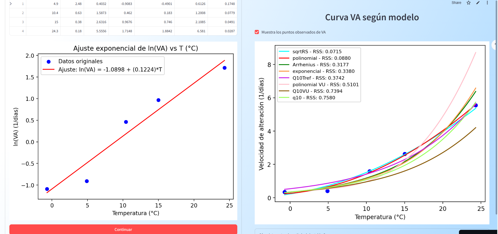

Bienvendio/a a mi Portfolio!
Bienvendio/a a mi Portfolio!

Hola, soy Cristina Recasens. Tengo un grado superior en desarrollo de Aplicaciones Multiplataforma, así que trabajo como desarrolladora de Apps y análisis de datos. También tengo un grado en Biología y un Máster en Ecología Terrestre y Gestión de Biodiversidad, que me ha dado conocimientos sobre estadística y modelización con R y QGiS (Universitat Autónoma de Barcelona).
Desde pequeña me ha gustado la ciencia, las matemáticas y la informática, por eso he acabado teniendo un perfil que considero interdisciplinar. Me encanta ver cómo una idea va tomando forma a través de botones y colores en la pantalla. Así como el momento en que descubres que hay relación entre dos variables que no esperabas.
Tengo un año de experiencia en desarrollo de aplicaciones con Python. Pero también tengo sólidos conocimientos de Java y SQL.
Es por todo esto que no me dan miedo los retos o aprender cosas nuevas, me encanta aprender constantemente y considero que tengo facilidad para adaptarme.
¿Crees que puedo ser buena candidata? No dudes en contactarme.
Desarrolladora de una aplicación para IRTA (Instituto de Investigación Agroalimentaria) donde a través de una serie de preguntas, la aportación de datos por parte del usuario y de la posterior aplicación de análisis estadísticos, se puede hacer un ajuste aproximado de la fecha de vencimiento de la comida.

 Demo
Demo
Juego senzillo inspirado en FlappyBirds que consiste en recoger la nubes blancas y esquivar las tormentas. ¿Cuántos puntos puedes hacer? Tienes la apk y el código disponible en mi github.
 Demo
Demo
Aplicación de escritorio diseñada con Java y JavaFX donde de manera simulada muestra el tiempo actual, incluye hora, cronomoetro, alarma y permite cargar y reproducir hasta 5 canciones que se tengan en local
Septiembre 2024 - Junio 2025
Desarrollo de software con Python (Matplotlib, Numpy, Pandas, Streamlit) y análsis de datos (MySQL y Python).
Febrero 2017 - Septimebre 2017
Estudio estadístico usando R y QGiS para estudiar el comportamiento del jabalí en el parque natural de Collserola y la ciudad de Barcelona.
Septiembre 2023 - Junio 2025
Grado superior de Desarrollo de aplicacions multiplataforma en el Instituto de Palamós. He aprendido desarrollo de aplicaciones con Java, Python y Kotlin. Además de aprender lenguajes de bases de datos como MySQL o PostgreSQL.
Septiembre 2016 - Septiembre 2017
Máster de estudios estadísticos y modelización aplicados a la gestión de biodiversidad. Gracias a este Máster he adquirido una base sólida de estadística y modelización a través de la aplicación de diferentes modelos y herramientas (como R y QGiS)
Septiembre 2011 - Junio 2015
Grado Universitario en Biología general, que me ha dado un ámplio conocimento sobre diferentes temas en relación a la vida y la ciéncia.